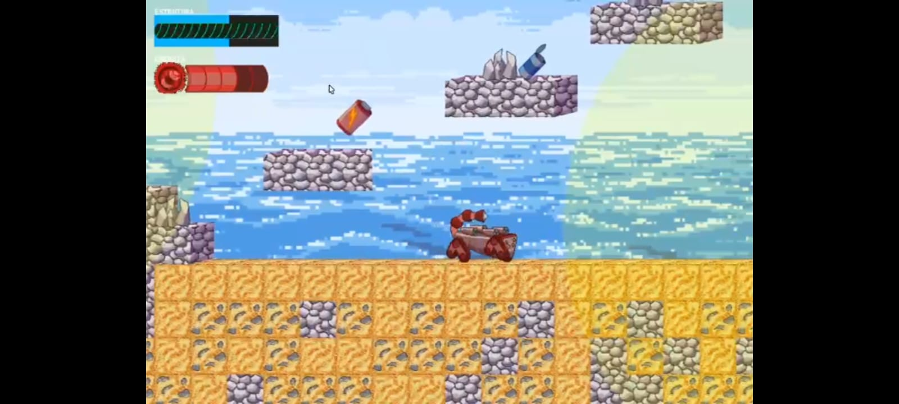
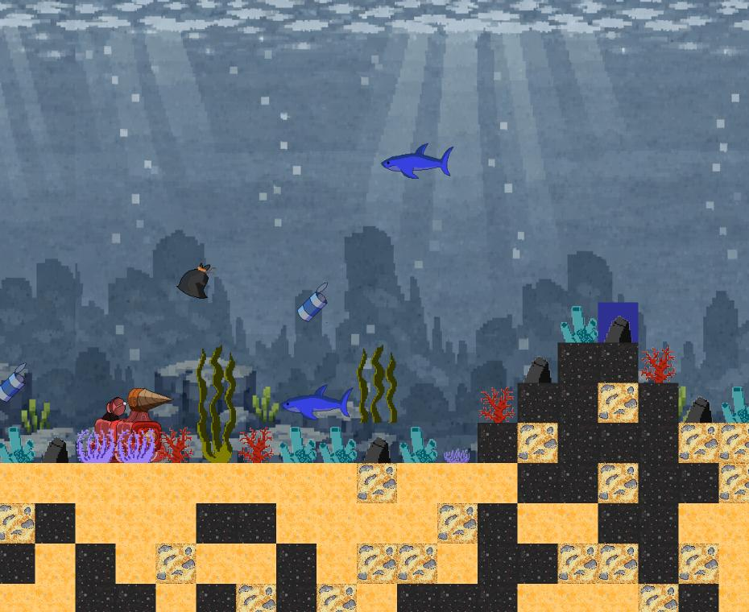
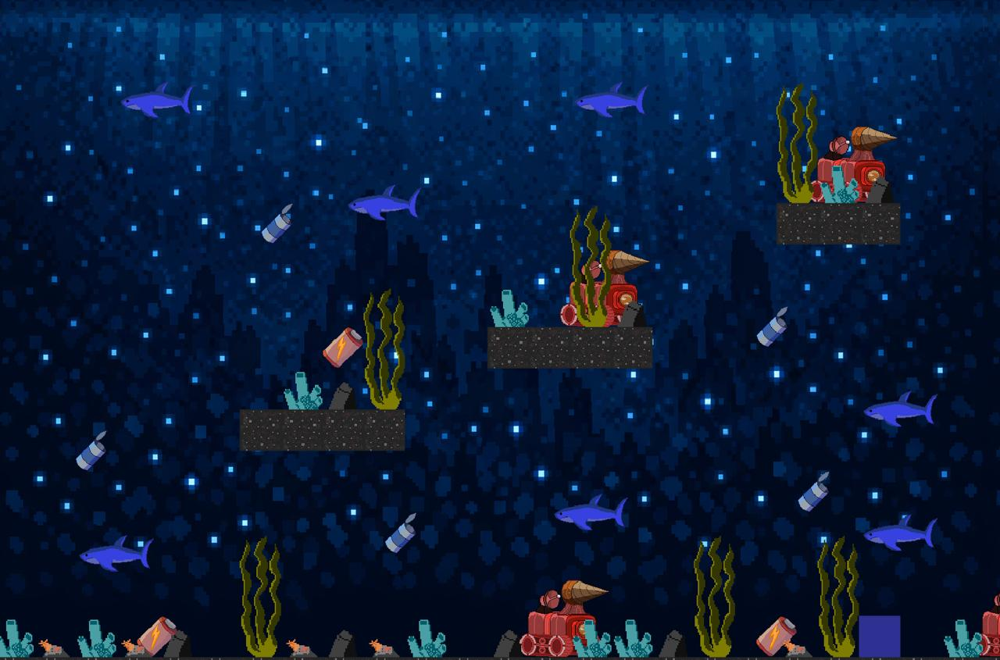
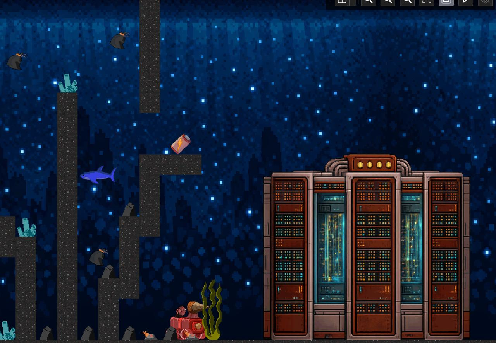

Uma jornada tecnológica nas profundezas corrompidas.
Em um futuro onde a infraestrutura de dados foi engolida pelo oceano, você deve navegar pelas ruínas de um Datacenter submerso. O jogo combina exploração precisa e uma atmosfera densa, onde o perigo não vem apenas da pressão da água, mas de sistemas de segurança que ainda se recusam a desligar.
ODS 14: Vida na Água Este projeto busca refletir sobre o descarte de lixo eletrônico e a invasão tecnológica nos biomas marinhos.




O protótipo da Sprint Atual pode ser baixado ou executado clonando o repositório oficial.
Acessar Repositório no GitHub